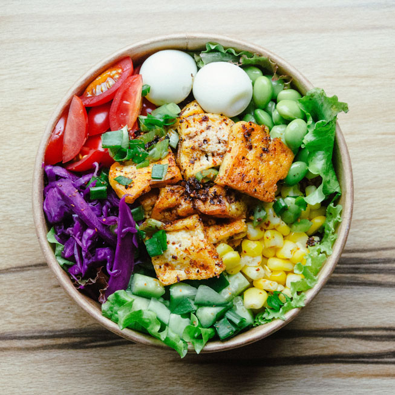

About
Where it all began and how I got here, now...
The woman behind Family Kitchen is Jenny, a 34 year old mother of two.
Meet Jenny
I started this blog back in 2014 when I first became a mother. As a first time mother it was hard to find dinner recipes that was nutritious and tasteful, but at the same time didn't make me spent hours in the kitchen.
In between work, kindergarten, school and after school activities it became more and more visible to me that easy, but still tasty and nutritional dinner recipes was something other parents also needed new inspiration on.
All the recepies you find on this blog is recepies I make for my family everyday.
I want to inspire parents that good homecooking don’t need to take up all your free time. - Jenny
Chefs recommendations
One of my most common questions is which dinner recipe is my all time favorite. Whenever I have little time or just don’t feel like spending a lot of time cooking, but still want a tasteful dinner, this is my go to.
The salmon bowl. It's so easy to make, and you don’t have to follow the exact recipe, this you can make with the vegetables you have in your refrigerator.
Let's make some new dinner experiences together.
Hope you find some new inspiration here on my blog. - Jenny
Salmon bowl
Ingredients
- 1/3 c. low-sodium soy sauce
- 1/3 c. extra-virgin olive oil
- 1/4 c. chili garlic sauce
- Juice of 1 lime
- 2 tbsp. honey
- 4 cloves garlic, minced
- 4 (4-oz.) salmon fillets
- Cooked brown rice
- 1 avocado, sliced
- 1 medium carrot, grated
- 1/2 red onion
- Sesame seeds
How to cook
- Make salmon: Preheat oven to 350° and line a large baking sheet with foil.
- In a medium bowl, whisk together soy sauce, olive oil, chili garlic sauce, lime juice, honey, and garlic.
- Add salmon and gently toss to combine. Place on prepared baking sheet and bake until salmon is fork-tender, 20 to 25 minutes.
- Assemble bowls: Divide rice among 4 bowls. Top with salmon, pickled cucumbers, avocado, carrot, red onion, cilantro, and sesame seeds. Drizzle with spicy mayo.